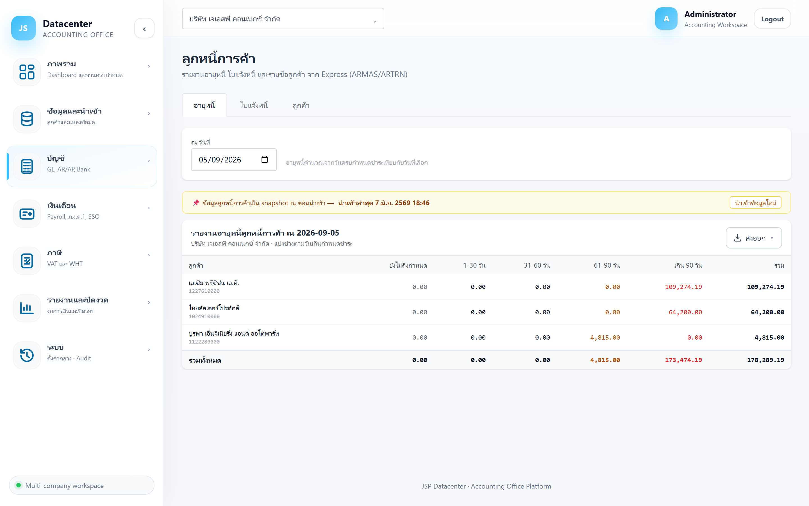
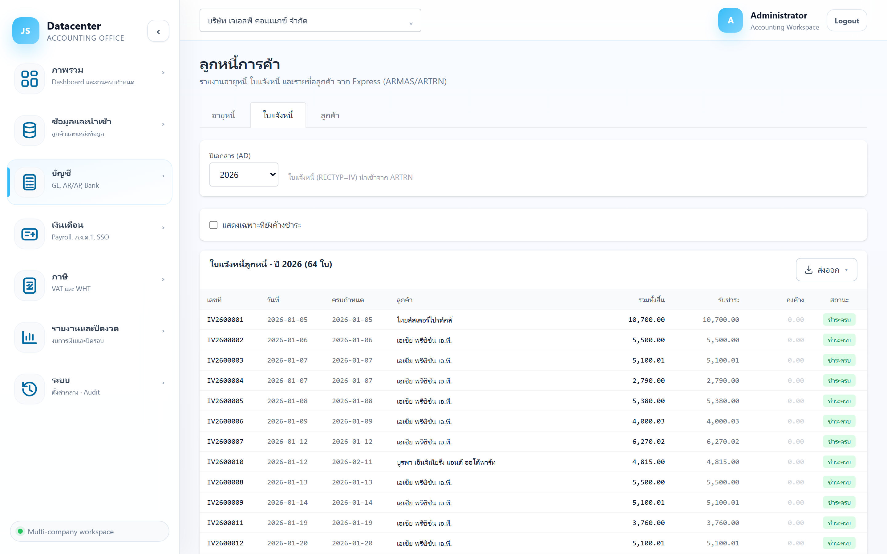

ลูกหนี้การค้า
ติดตามยอดค้างรับจากลูกค้า — รายงานอายุหนี้แบ่งช่วงวันเกินกำหนด, ใบแจ้งหนี้รายใบพร้อมสถานะการรับชำระ และทะเบียนลูกค้า ทั้งหมดดึงจาก Express (ARMAS / ARTRN)
ตอบคำถาม 3 ข้อของงานลูกหนี้: ใครค้างเท่าไร · ค้างมานานแค่ไหน · ใบไหนยังไม่ปิด — เป็นรายงาน อ่านอย่างเดียว การรับชำระต้องบันทึกที่ Express แล้วนำเข้าใหม่
1. การเข้าใช้งาน
- เลือกบริษัทลูกค้า ที่แถบด้านบน
- เปิดเมนู บัญชี → ลูกหนี้
- เลือกแท็บ: อายุหนี้ · ใบแจ้งหนี้ · ลูกค้า
ยอดค้างเป็นภาพนิ่ง ณ ตอนนำเข้า ถ้ามีการรับชำระใน Express หลังจากนั้น ยอดบนหน้าจอจะยังไม่ลด — กด “นำเข้าข้อมูลใหม่” ที่แถบสีเหลืองก่อนทวงถามลูกค้า
2. แท็บ “อายุหนี้”
แท็บที่เปิดขึ้นมาเป็นอันแรก — สรุปยอดค้างของลูกค้าแต่ละรายแบ่งตามช่วงวันที่เกินกำหนดชำระ

| ส่วนที่ใช้ | คำอธิบาย |
|---|---|
| ณ วันที่ | วันที่ใช้เป็นจุดอ้างอิงในการนับอายุหนี้ (ค่าตั้งต้นคือวันนี้) — เปลี่ยนแล้วตารางอัปเดตทันที ไม่ต้องกดปุ่มใด |
| ยังไม่ถึงกำหนด | ใบที่ยังไม่ถึงวันครบกำหนดชำระ |
| 1-30 / 31-60 วัน | เกินกำหนดมาแล้วในช่วงนั้น |
| 61-90 วัน | เกินกำหนดปานกลาง — แสดงเป็น สีเหลือง |
| เกิน 90 วัน | ค้างนาน — แสดงเป็น สีแดง ควรตามเร่งด่วน |
| รวม | ยอดค้างทั้งหมดของลูกค้ารายนั้น |
นับจาก วันครบกำหนดชำระ ของใบแจ้งหนี้เทียบกับ “ณ วันที่” ที่เลือก — ไม่ใช่วันที่ออกใบ วันครบกำหนดมาจากเครดิตเทอมที่ตั้งไว้ในทะเบียนลูกค้าของ Express
ตั้ง “ณ วันที่” เป็นวันสิ้นรอบบัญชี จะได้อายุหนี้ ณ วันปิดงบ ใช้ประเมินหนี้สงสัยจะสูญและแนบเป็นกระดาษทำการได้เลย (กด ส่งออก เป็น Excel)
3. แท็บ “ใบแจ้งหนี้”
รายใบแจ้งหนี้ของปีที่เลือก ใช้หาว่าใบไหนยังไม่ปิดและรับชำระไปเท่าไรแล้ว

| ส่วนที่ใช้ | คำอธิบาย |
|---|---|
| ปีเอกสาร (AD) | ปี ค.ศ. ของใบแจ้งหนี้ — แสดงเฉพาะปีที่มีข้อมูลจริง |
| แสดงเฉพาะที่ยังค้างชำระ | ติ๊กเพื่อซ่อนใบที่ชำระครบแล้ว |
| คอลัมน์ | ความหมาย |
|---|---|
| เลขที่ / วันที่ | เลขที่ใบแจ้งหนี้และวันที่ออกเอกสาร |
| ครบกำหนด | วันครบกำหนดชำระ (ใช้คำนวณอายุหนี้) |
| ลูกค้า | ชื่อลูกค้า |
| รวมทั้งสิ้น | ยอดสุทธิของใบ (รวมภาษี) |
| รับชำระ | ยอดที่รับมาแล้ว |
| คงค้าง | ยอดที่ยังไม่ได้รับ — แดงเข้ม ถ้ายังมีค้าง, สีเทาจางถ้าเป็นศูนย์ |
| สถานะ | ชำระครบ หรือ ค้างชำระ |
เฉพาะใบแจ้งหนี้ (Express: ARTRN ที่ RECTYP=IV) — ใบเสร็จ/ใบลดหนี้จะสะท้อนผ่านช่อง “รับชำระ” และยอดคงค้าง
4. แท็บ “ลูกค้า”
ทะเบียนลูกค้าที่ดึงจาก Express พร้อมยอดค้างรวมของแต่ละราย
| ส่วนที่ใช้ | คำอธิบาย |
|---|---|
| แสดงลูกค้าที่ปิดใช้งานด้วย | ติ๊กเพื่อรวมลูกค้าที่เลิกใช้งานแล้ว (จะมีป้าย “(ปิดใช้งาน)” ต่อท้ายชื่อ) |
| รหัส / ชื่อลูกค้า | รหัสและชื่อจาก Express (ARMAS) |
| เลขผู้เสียภาษี | ใช้ตรวจกับใบกำกับภาษีขาย |
| เครดิตเทอม | เงื่อนไขชำระเงิน เช่น “30 วัน” |
| อีเมล | อีเมลติดต่อ (Express เก็บแฝงไว้ในช่องหมายเหตุ ระบบดึงมาให้) |
| ยอดค้าง | ยอดค้างรวมจากใบแจ้งหนี้ที่ยังไม่ปิดของลูกค้ารายนั้น |
ลูกค้า บอกว่าใครค้างรวมเท่าไร → อายุหนี้ บอกว่าค้างมานานแค่ไหน → ใบแจ้งหนี้ บอกว่ามาจากใบไหนบ้าง
5. ส่งออกรายงาน
ทุกแท็บมีปุ่ม ส่งออก มุมขวาบนของตาราง — เลือก Excel / CSV / PDF ได้เหมือนกันทั้งระบบ
6. ปัญหาที่พบบ่อย
| อาการ | สาเหตุและวิธีแก้ |
|---|---|
| ขึ้น “ไม่มียอดลูกหนี้คงค้าง ณ วันที่เลือก” | ไม่มีใบค้างชำระ ณ วันนั้น หรือยังไม่ได้นำเข้าข้อมูลลูกหนี้ — ตรวจที่แท็บใบแจ้งหนี้ประกอบ |
| ยอดทั้งหมดไปกองอยู่ช่อง “เกิน 90 วัน” | ปกติเมื่อดูข้อมูลปีเก่าโดยตั้ง “ณ วันที่” เป็นวันนี้ — เปลี่ยนเป็นวันสิ้นรอบบัญชีของปีนั้นแทน |
| ยอดค้างไม่ตรงกับที่รับชำระไปแล้ว | ข้อมูลเป็น snapshot — นำเข้าใหม่แล้วดูอีกครั้ง |
| ไม่พบลูกค้าบางราย | อาจถูกปิดใช้งานใน Express — ติ๊ก “แสดงลูกค้าที่ปิดใช้งานด้วย” |
| ยอดรวมลูกหนี้ไม่ตรงกับบัญชีลูกหนี้ใน GL | ตรวจที่ บัญชีแยกประเภท ว่าบัญชีลูกหนี้มีรายการปรับปรุงอื่นปนอยู่หรือไม่ (เช่น ตั้งค่าเผื่อหนี้สงสัยจะสูญ) |
ฝั่งตรงข้ามของงานนี้คือ เจ้าหนี้การค้า →